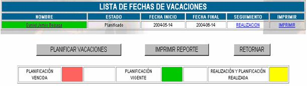
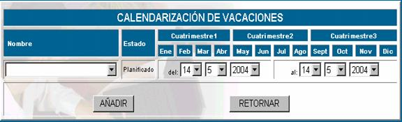

VACACIONES
Según el manual de procedimientos de administración de dirección y tecnología, la Jefatura US debe elaborar en forma anual la planificación de vacaciones tomando en cuenta la recomendación de 14 días calendarios de vacación continua.
La pantalla principal de esta opción se muestra a continuación.

Nombre;
aquí se registra el nombre del empleado a quien se le planifica, realiza o realizó sus vacaciones.Estado; El estado se refiere a la fase en la cual se encuentra, puede ser planificado, en realización o realizada.
Fecha inicio; especifica la fecha de inicio de la vacación
Fecha final; especifica la fecha en la cual concluye su periodo de vacación.
Planificar vacaciones; como se dijo anteriormente esta tarea es función de la Jefatura de la Unidad de Sistemas, la pantalla principal de esta opción se muestra a continuación.

Nombre;
elija el nombre del empleado a quien se le asignará vacacionesEstado;
como se está realizando la planificación de vacaciones el estado se marca como planificado.Del - al;
en esta parte se especifica la fecha desde la cual se le dará vacaciones al empleado hasta la fecha limite en la que debe volver, esta asignación se la realiza en función de las políticas internas de la empresa, por supuesto si las fechas no son acordes, entonces le aparecerá un mensaje de error.Seguimiento; en esta parte se hace la realización de la vacación, se anota las fechas reales en los cuales se está dando la vacación.
Imprimir; se puede ver un reporte de las vacaciones de cada empleado.